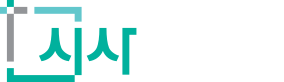
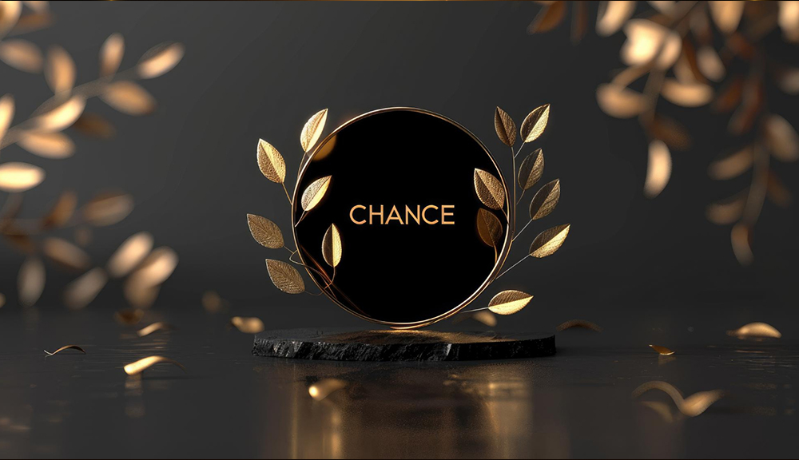

한국미디어브랜드평가원(KMBE)이 주최하고 시사와이드가 함께하는 본 평가는
미디어 데이터 분석을 통해 대한민국 산업별 우수 브랜드의 객관적 가치를 발굴하고 공신력을 부여합니다.
Assessment
평가기준
한국미디어브랜드평가원(KMBE)은 정량화된 성과를 해석하여 미디어 지표 기반의 브랜드 가치를 검증합니다.
미디어 및
디지털 인지력
20%
포털 및 뉴스 매체 노출 안정성, 키워드 점유율 분석
소셜 반응 및
디지털 공감도
20%
SNS/커뮤니티 실제 소비자 반응 및 유대감 측정
브랜드 신뢰도 및
경험 가치
20%
고객 만족도 구조 및 브랜드 가치 일관성 점검
제품 및 서비스
핵심 경쟁력
20%
독자 기술, 전문성, 특허 등 객관적 우위 요소 검증
시장 적합성 및
성장 모멘텀
15%
사업 모델 지속 가능성 및 향후 확장 가능성 분석
사회적 책임 및
브랜드 지속성
5%
윤리적 경영 실천 및 조직 운영의 투명성 확인
Overview
시상개요
대한민국의 내일을 이끌어갈 브랜드의 여정을 시작합니다.
| 시상명 | 2026 KMBE 우수 브랜드 (2026 KMBE Best Brand) |
|---|---|
| 주최 / 주관 | 한국미디어브랜드평가원(KMBE) / 시사와이드(SISAWIDE) |
| 참여 대상 | 일반 기업, 중소·중견기업, 프랜차이즈, 병원, 교육기관, 스타트업 등 |
| 접수 기간 | 부문별 상이 (선정 기업 대상 개별 공문 안내) |
| 결과 발표 | 심사 종료 후 개별 안내 |
| 접수 방법 | 참가신청 및 문의하기 버튼 클릭 후 양식 입력 |
Process
브랜드 선정 프로세스
사전 조사
평가 후보자 조사 및
행사 일정 사전 안내
신청 및 평가 접수
온라인 신청 폼 접수 및
증빙 서류 제출
최종 심사
최종 평가 및 심사
선정 결과 통보
심사 결과 개별 안내
발표
공식 상패 · 인증서 수여 및
언론 보도를 통한 브랜드 가치 공식화
Benefits
수상 기업 혜택
성장을 위한 가장 확실한 증명, KMBE 브랜드 에셋
브랜드 인증 상징 Official Symbols
공식 인증서 / 인증 메달 / 크리스탈 트로피
실무 마케팅 자산 Marketing Assets
디지털 인증 엠블럼 및 팝업 배너 / 홍보 포스터 / 오프라인 X-배너

미디어 확산 및 신뢰 Media Presence
언론 보도 공식 뉴스 송출 :
시사와이드 포함 온라인 언론 네트워크 송출로 포털 검색 신뢰도 확보
Review
선정 기업 리뷰
검증된 데이터와 공신력 있는 보도를 통해 대한민국 대표 브랜드의 반열에 합류하세요.